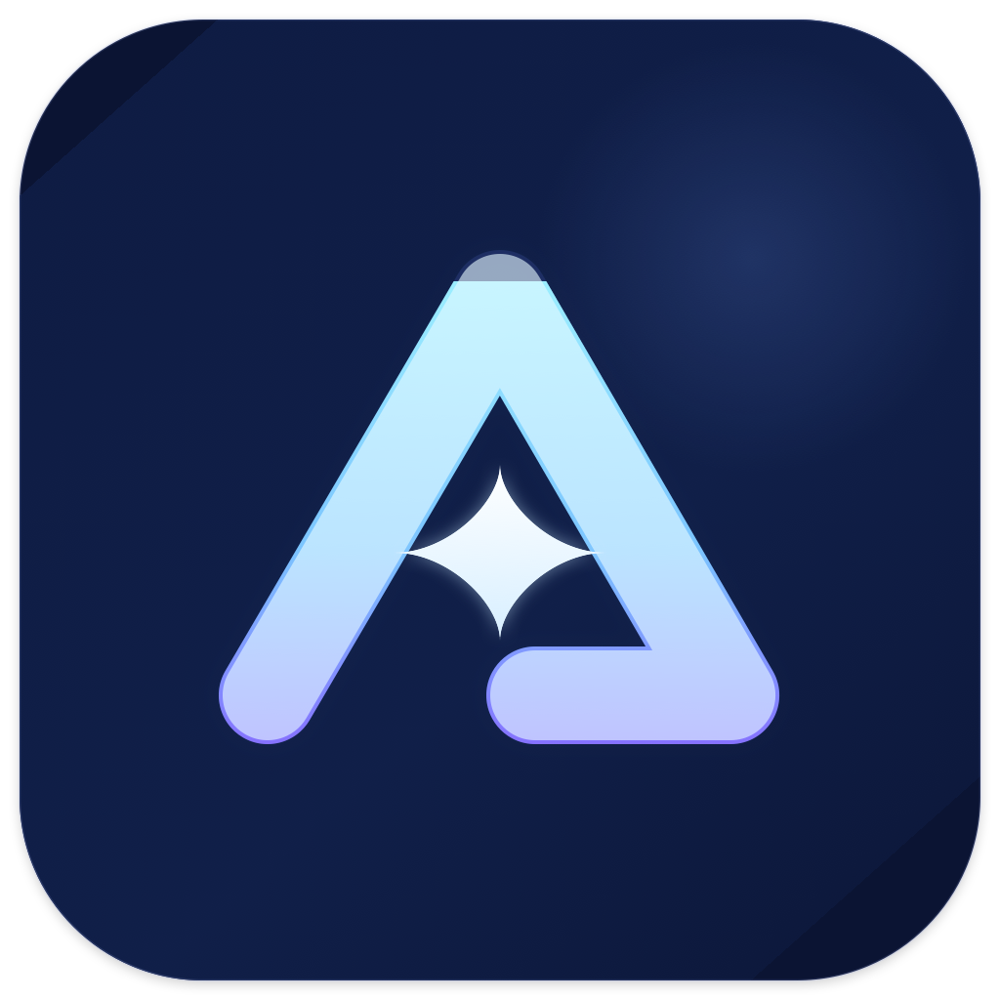
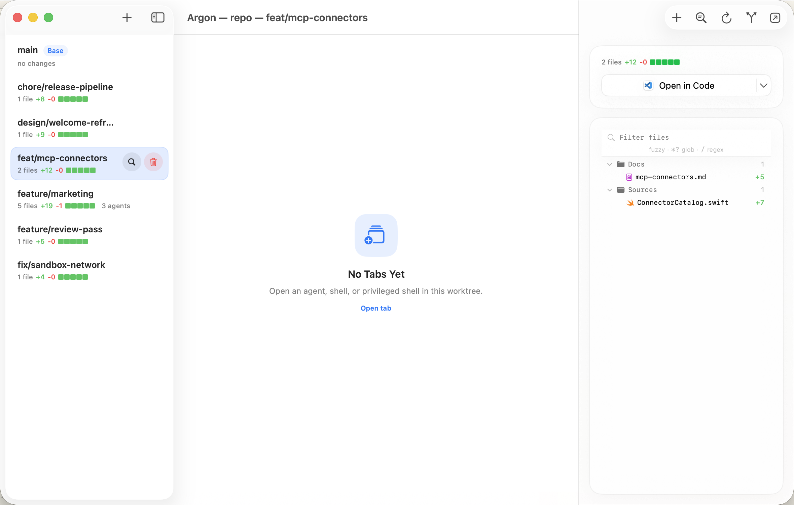
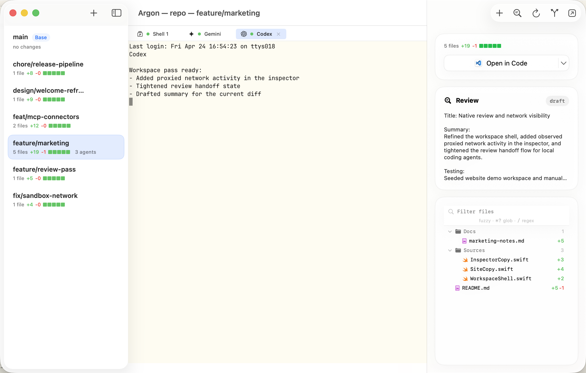
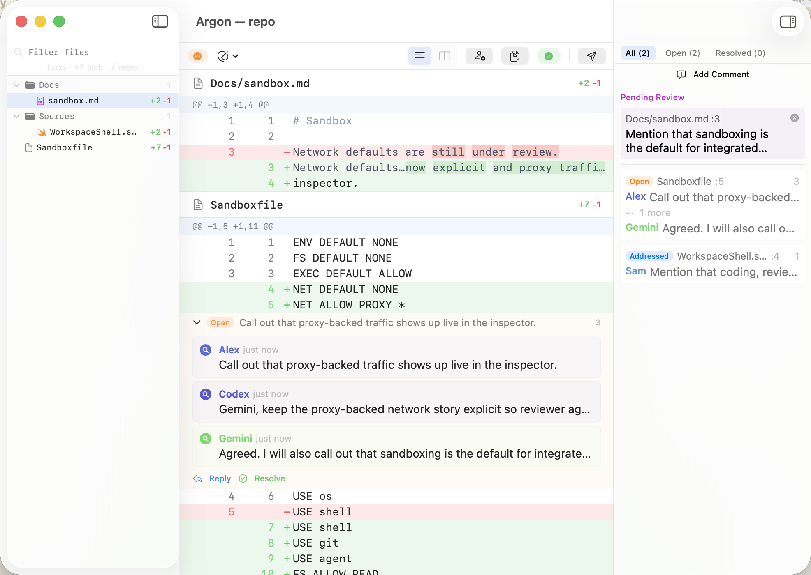
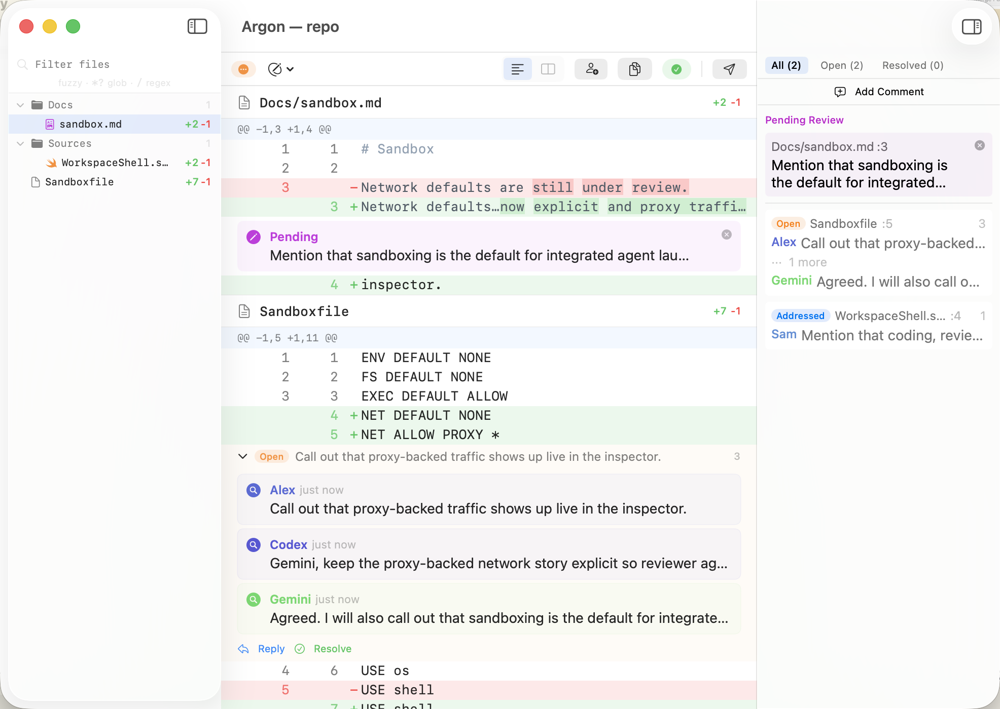

Worktree-native
Keep multiple branches live in one repository window instead of juggling shell tabs and hand-managed directories.

ArgonManage worktrees, run agent terminals, inspect diffs, launch review, and keep the whole loop inside one native workspace.
Sandboxfileargon <dir> or jump straight into review with argon review <dir>Keep multiple branches live in one repository window instead of juggling shell tabs and hand-managed directories.
Use the native app for active work and the bundled
argon CLI for fast launch and machine-readable
automation.
Review stays formal: comments, requested changes, approval, and close state are visible and machine-readable.
See active branches, conflicts, review state, and finalize actions in one sidebar instead of juggling clone directories by hand.

Run shells and coding agents inside the selected worktree, with inspector context and sandbox state visible beside the terminal instead of in a second app.

Draft comments, request changes, approve when ready, and bring in other agents to review the branch before it lands or merges back from the same workspace.

Keep the approval step visible and deliberate. Argon turns review into a native checkpoint where you can inspect the diff, bring in other agents to review the branch, request changes, and approve only when it is ready to merge.

SwiftUI workspace shell, embedded terminals, diff inspector, review windows, and update handling.
argon CLIHuman-friendly app launch plus machine-readable agent commands for review, sandboxing, and automation.
Explicit states, persistent thread identity, draft batching, and local-first storage.
Argon can launch sandboxed shells and agents on macOS with filesystem, exec, environment, and proxy-backed network policy.
Sandboxfile-driven policyargon sandbox checkENV DEFAULT NONE
FS DEFAULT NONE
EXEC DEFAULT ALLOW
NET DEFAULT NONE
NET ALLOW PROXY *
USE os
USE shell
USE git
USE agent
FS ALLOW READ .
FS ALLOW WRITE .Open a repo, launch sandboxed agents, review the diff, and merge back without leaving the app.